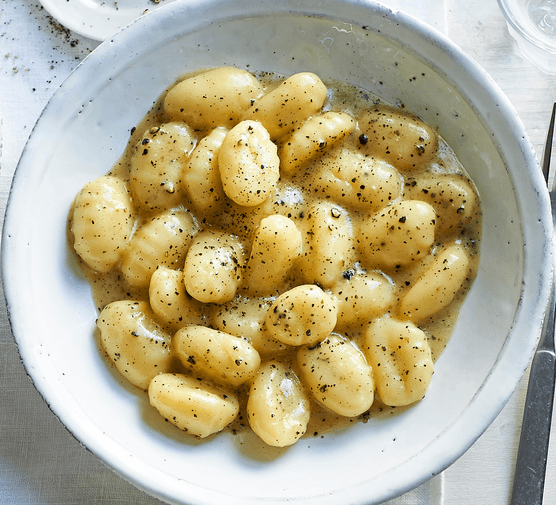

Gnocchi

Description
Ingredients
Potatoes
Flour
Egg
Steps
Boil and mash the potatoes.
Combine the ingredients, then knead into a ball.
Shape the dough into "snakes."
Cut the snakes into pieces.
Boil and drain the gnocchi.